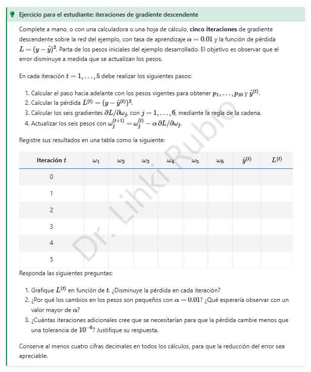
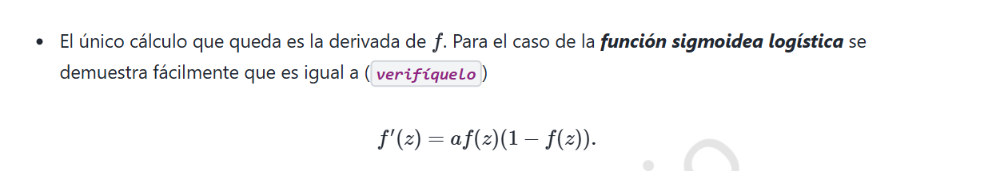
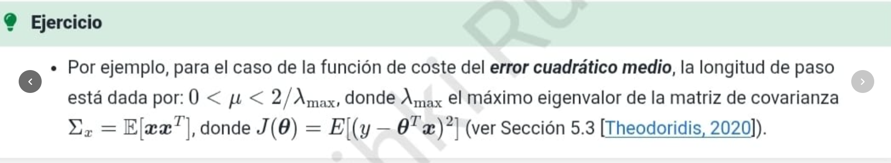
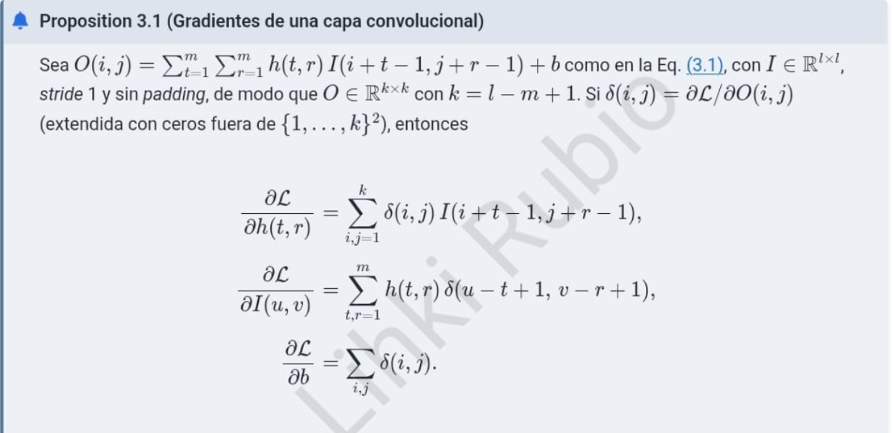
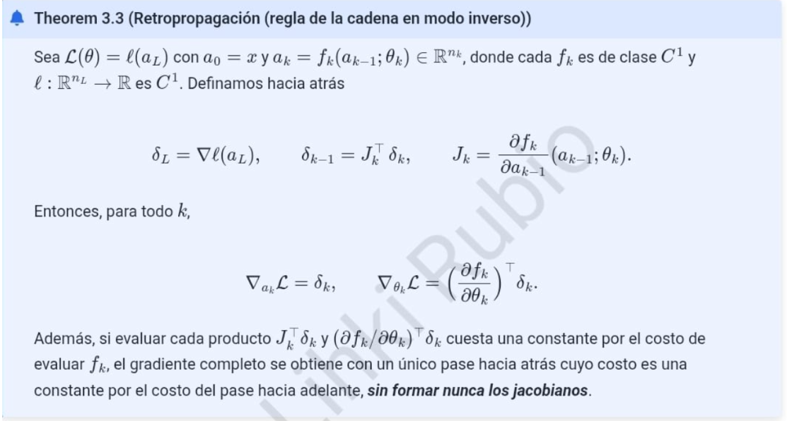
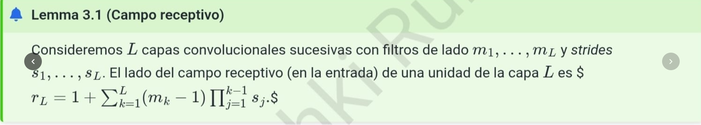
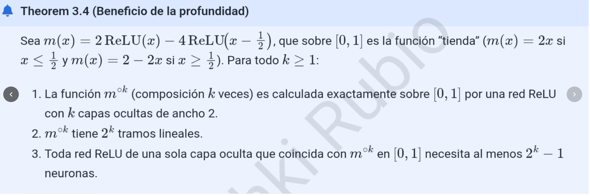

Enunciados originales#
Estas imágenes se extrajeron de Demostraciones Bonificacion.docx. Se conservan completas, con sus títulos, notación y marcas originales, para contrastar cada capítulo con el material de partida.
Entrenamiento de MLP#


Figura 1 Ejercicio de la sección 2.7. El ejemplo al que remite la captura no está incluido en el documento.#
Derivada de la sigmoide#

Figura 2 Título de la sección original.#


Figura 3 Identidad de la derivada solicitada en el material.#
Tamaño de paso#


Figura 4 Enunciado del tamaño de paso. La regla de actualización no aparece en el recorte.#
Gradientes de una capa convolucional#


Figura 5 Proposición 3.1.#
Retropropagación#


Figura 6 Teorema 3.3.#
Campo receptivo#


Figura 7 Lema 3.1.#
Beneficio de la profundidad#


Figura 8 Teorema 3.4.#